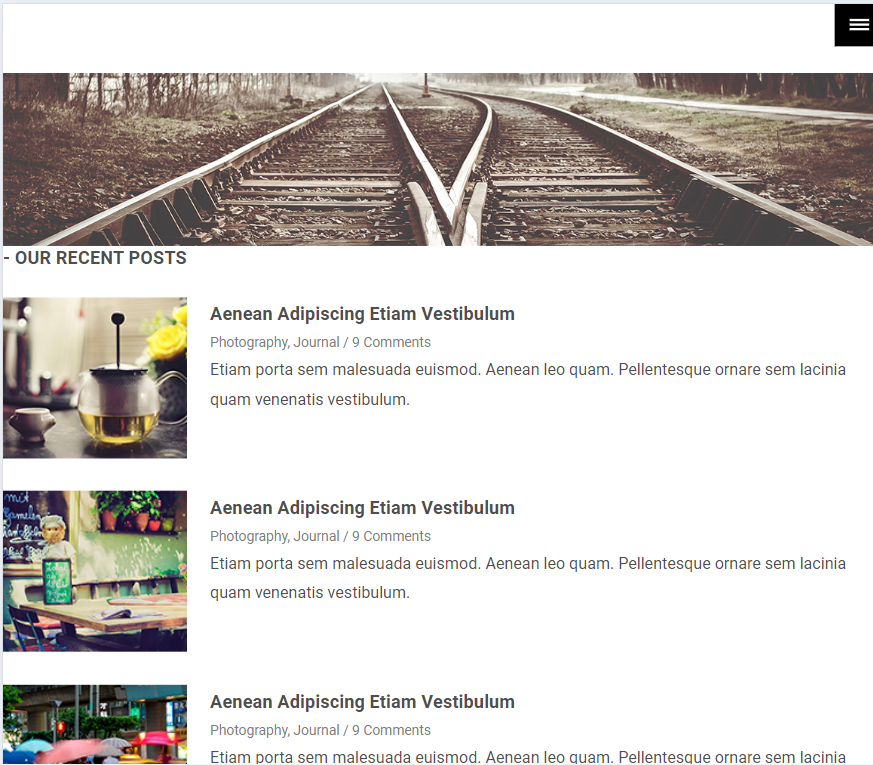
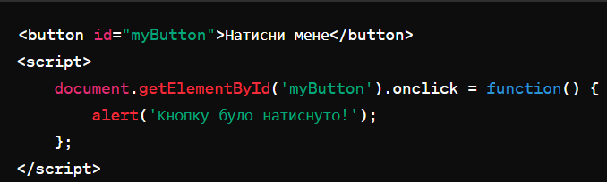
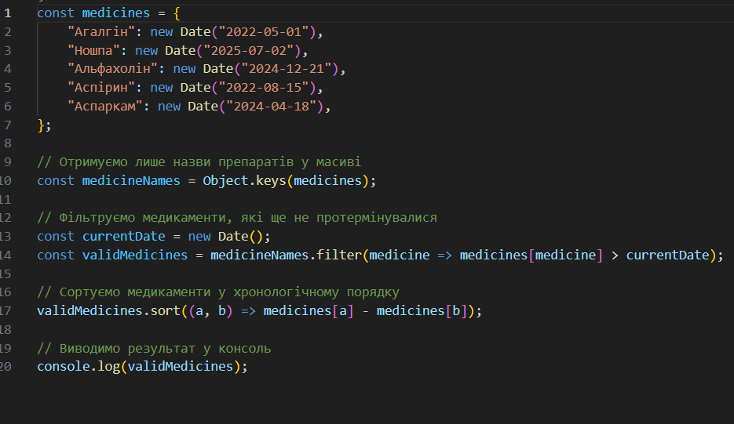
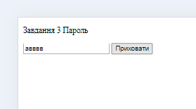

Опис предметного середовища
Для створення HTML-документа для відображення результатів роботи всіх лабораторних робіт, спочатку необхідно зрозуміти базову структуру HTML-документа. Основна структура HTML-документа HTML-документ складається з наступних основних частин:
- "!DOCTYPE html: Оголошення типу документа, що вказує браузеру на використання HTML5."
- html: Кореневий елемент, що містить весь HTML-код.
- head: Секція документа, що містить метадані, такі як заголовок документа, підключення стилів та скриптів.
- body: Основний вміст документа, включаючи текст, зображення, посилання, таблиці та інші елементи.
Тема Мета Місце розташування лабораторної работи №1
Тема: СТРУКТУРА HTML-ДОКУМЕНТА. ВИБІР ПРЕДМЕТНОЇ ГАЛУЗІ. РОБОТА З ПОСИЛАННЯМИ, ТАБЛИЦЯМИ, ЗОБРАЖЕННЯМИ, СПИСКАМИ в HTML-ДОКУМЕНТІ.
Мета: придбати практичні навички роботи з HTML-документом, таблицями, , зображеннями, посиланнями, списками, формами Створити шаблон звітного HTML-документом для відображення результатів роботи всіх лабораторних робіт.
Структура документа
HTML-код таблиць
Теорія HTML-коду для таблиць
Таблиці в HTML дозволяють структуровано відображати дані у вигляді рядків і стовпців. Вони складаються з різних тегів, які визначають різні частини таблиці.
Основні теги для створення таблиці
- table: Визначає початок і кінець таблиці.
- tr: Визначає рядок в таблиці.
- th: Визначає заголовок стовпця.
- td: Визначає комірку даних у рядку.
Структура документа
HTML-код форми
Теорія HTML-коду для форм
Форми в HTML дозволяють взаємодіяти з користувачем, збирати дані та надсилати їх на сервер для обробки. Форми складаються з різних елементів, які визначають типи полів вводу, кнопки та інші інтерактивні елементи.
Основні теги для створення форм
- form: Визначає початок і кінець форми.
- input: Визначає різні типи полів вводу.
- label: Додає мітку до елементу вводу.
- textarea: Визначає багаторядкове текстове поле.
- select: Створює випадаючий список.
- option: Визначає пункт у випадаючому списку.
- button: Визначає кнопку.
Типи полів вводу
- text: Однорядкове текстове поле.
- password: Поле для введення паролю.
- email: Поле для введення електронної пошти.
- number: Поле для введення числових значень.
- checkbox: Прапорець.
- radio: Перемикач.
- file: Поле для завантаження файлів.
- submit: Кнопка для відправлення форми.
- reset: Кнопка для скидання введених даних.
Структура документа
HTML-код зображень
Зображення є важливою частиною веб-сторінок, оскільки вони допомагають передати інформацію більш ефективно і зробити сторінки візуально привабливішими. В HTML існують спеціальні теги та атрибути для роботи із зображеннями.
Основний тег для зображень
- img: Тег використовується для вставки зображень на веб-сторінку. Це порожній тег, який не має закриваючого тегу. Основні атрибути тега img
- src: Вказує шлях до зображення. Це обов'язковий атрибут.
- alt: Описує зображення. Цей текст відображається, якщо зображення не завантажується, і використовується для доступності.
- width та height: Визначають ширину і висоту зображення в пікселях або відсотках.
- title: Додає підказку, яка з'являється при наведенні на зображення.
- loading: Оптимізує завантаження зображень, може мати значення lazy для відкладеного завантаження.

Висновки
Контрольні питання
-
Яка структура HTML-документу
Структура HTML-документу HTML-документ має чітко визначену структуру, яка складається з наступних основних елементів:
!DOCTYPE html: Оголошення типу документу. Вказує браузеру, що документ написаний на HTML5.
html lang="en": Кореневий елемент HTML-документу. Атрибут lang задає мову документу.
head: Містить мета-дані документу, такі як його заголовок (title), посилання на зовнішні стилі та скрипти.
body: Містить весь видимий вміст веб-сторінки: текст, зображення, таблиці, посилання тощо. -
Дати визначення тега
Тег — це інструкція, що вказує браузеру, як відображати частину вмісту HTML-документу. Теги складаються з імені в кутових дужках, можуть мати атрибути і можуть бути парними або одиночними. Приклад: Парний тег: pThis is a paragraph.p Одиночний тег: img src="image.jpg" alt="Image description"
-
Які теги використовуються при роботі з таблицями
Теги для роботи з таблицями Для створення і структурування таблиць використовуються наступні теги:
table: Визначає таблицю.
tr: Визначає рядок таблиці.
td: Визначає комірку (дані) в рядку таблиці.
th: Визначає заголовок комірки (використовується для заголовків стовпців або рядків).
thead: Групує один або кілька рядків заголовка таблиці.
tbody: Групує основний вміст таблиці.
tfoot: Групує один або кілька рядків підсумків таблиці.
caption: Додає заголовок до таблиці. -
Які теги використовуються при роботі з зображеннями
Теги для роботи з зображеннями Основний тег для вставки зображень в HTML-документ:
img: Використовується для вставки зображень. Основні атрибути тега img:
src: Вказує шлях до зображення.
alt: Описує зображення для користувачів, які не можуть його бачити.
width: Визначає ширину зображення.
height: Визначає висоту зображення.
title: Додає підказку при наведенні на зображення. -
Які теги використовуються при роботі зі списками
Теги для роботи зі списками Для створення списків в HTML використовуються наступні теги:
ul: Визначає неупорядкований (маркерний) список.
ol: Визначає упорядкований (нумерований) список.
li: Визначає елемент списку. -
Перерахувати засоби опису таблиць в html
Засоби опису таблиць в HTML Для створення і стилізації таблиць в HTML використовуються:
Теги структури таблиць: table, tr, td, th, thead, tbody, tfoot, caption.
Атрибути для налаштування таблиць:
border: Визначає ширину рамки таблиці.
cellpadding: Визначає відступ всередині комірок таблиці.
cellspacing: Визначає відстань між комірками таблиці.
colspan: Визначає, скільки стовпців займає комірка.
rowspan: Визначає, скільки рядків займає комірка.
Висновки Лабораторна робота №1
Тема: Структура HTML-документа. Вибір предметної галузі. Робота з посиланнями, таблицями, зображеннями, списками в HTML-документі.
Висновки
Засвоєння структури HTML-документа:
В ході виконання лабораторної роботи було детально розглянуто структуру HTML-документа, що включає основні теги:
!DOCTYPE html, html, head, body.
Це дозволило зрозуміти важливість кожного елемента в побудові коректного HTML-документа. Робота з посиланнями:
Було вивчено теги a, які використовуються для створення гіперпосилань. Розглянуто атрибути href, target та інші, які дозволяють налаштовувати поведінку та зовнішній вигляд посилань.
Робота з таблицями: Вивчено теги table, tr, td, th, thead, tbody, tfoot, які використовуються для створення та форматування таблиць в HTML-документах. Це дозволило зрозуміти, як створювати структуровані та організовані дані у вигляді таблиць. Робота з зображеннями:
Було розглянуто теги img для вставки зображень у HTML-документ. Розглянуто атрибути src, alt, width, height та інші, які дозволяють налаштовувати відображення зображень на веб-сторінках. Робота зі списками:
Вивчено теги ul, ol, li для створення нумерованих та маркованих списків. Це дозволило зрозуміти, як організовувати інформацію у вигляді списків, що полегшує її сприйняття користувачами. Засоби опису таблиць в HTML:
Було розглянуто різні атрибути та елементи, які використовуються для опису та стилізації таблиць в HTML, такі як border, cellpadding, cellspacing, colspan, rowspan, а також використання CSS для додаткового форматування. Практичні навички Навички створення структурованих HTML-документів.
Уміння працювати з посиланнями, таблицями, зображеннями та списками.
Розуміння базових принципів форматування та організації контенту на веб-сторінках.
Загальні висновки
Виконання лабораторної роботи дозволило набути практичних навичок у створенні та форматуванні HTML-документів, а також зрозуміти важливість правильної структури та використання різних елементів для організації інформації на веб-сторінках. Ці знання є фундаментальними для подальшого вивчення веб-розробки та створення інтерактивних і користувачів-дружніх веб-додатків.
Список літератури (електронних джерел)
- HTML Підручник. w3schools.com. українською. https://w3schoolsua.github.io/html/index.html
- HTML. Мова для створення веб-сторінок. w3schools.com. Українською. https://w3schoolsua.github.io/index.html#gsc.tab=0
- HTML Довідник тегів. https://w3schoolsua.github.io/tags/index.html
- CSS Підручник. w3schools.com. українською. https://w3schoolsua.github.io/css/index.html#gsc.tab=0
- HTML.Language for creating web pages. W3Schools in English https://w3schoolsua.github.io/index_en.html#gsc.tab=0
- HTML Tutorial. https://w3schoolsua.github.io/html/index_en.html#gsc.tab=0
- Підручники HTML та CSS. https://htmlbook.at.ua/news/tutorial_html/1-0-1
- Learn to Code. With the world's largest web developer site. https://www.w3schools.com/
- Український веб-довідник. 9.https://css.in.ua/
- Довідник по HTML тегам https://css.in.ua/html/tags
- Довідник HTML тегів https://html-css.co.ua/dovidnuk-html-tags/
- HTML конструювання. http://htmlbook.in.ua/
- CSS-TRICKS. GUIDES. ARTICLES. https://css-tricks.com/
Тема Мета Місце розташування лабораторної работи №2
Тема: КАСКАДНІ ТАБЛИЦІ СТИЛІВ. СЕЛЕКТОРИ .ІДЕНТИФІКАТОРИ. СТИЛЬОВЕ ОФОРМЛЕННЯ ТЕКСТОВИХ ЕЛЕМЕНТІВ В HTML-ДОКУМЕНТАХ. РОБОТА З ПОСИЛАННЯМИ, ТАБЛИЦЯМИ, ЗОБРАЖЕННЯМИ, СПИСКАМИ в HTML-ДОКУМЕНТІ.
Мета: придбати практичні навички роботи з селекторами, ідентифікаторами, списками, різноманітними властивостями кольору і фону, зовнішними та внутрішними відступами, плаваючими елементами, оформленням текстових елементів
Способи підключення стилів
У веб-розробці стилі CSS (Cascading Style Sheets) можна підключити до HTML-документа кількома способами. Ось основні методи підключення стилів:
Inline Styles (Вбудовані стилі)
Цей метод дозволяє застосовувати стилі безпосередньо до окремих елементів HTML, використовуючи атрибут style.
Internal Styles (Внутрішні стилі)
Внутрішні стилі розташовуються в секції head HTML-документа в межах тегів style.
External Stylesheet (Зовнішній файл стилів)
Зовнішні стилі зберігаються у окремому файлі з розширенням .css. HTML-документ підключає цей файл за допомогою тега link в секції head.
Imported Styles (Імпортовані стилі)
Цей метод дозволяє імпортувати один CSS-файл в інший за допомогою директиви @import.
Селектори тегу
Селектори тегу (або селектори елементів) в CSS використовуються для вибору HTML-елементів за їхніми назвами тегів. Вони є базовими і одними з найпоширеніших типів селекторів. Нижче наведено кілька прикладів використання селекторів тегів та пояснення їхньої роботи.
Основний синтаксис
Селектор тегу складається з назви HTML-тега без жодних додаткових символів. Стилі, що застосовуються до такого селектора, будуть впливати на всі елементи цього типу на сторінці.
Селектор класу
Селектори класу в CSS дозволяють стилізувати HTML-елементи, які мають певний клас. Це дуже зручний спосіб застосовувати стилі до групи елементів, незалежно від їх типу.
Синтаксис селектора класу
Селектор класу в CSS починається з крапки (.) перед назвою класу. Назва класу чутлива до регістру, тому .example та .Example будуть розглядатися як різні класи.
Використання селекторів класу в HTML
Щоб застосувати стиль, визначений в селекторі класу, до HTML-елемента, треба додати атрибут class з відповідним значенням до елемента.
Використання декількох класів
HTML-елемент може мати декілька класів, розділених пробілами. Це дозволяє застосовувати до елемента стилі з різних класів.
Селектори ідентифікаторів
Селектори ідентифікаторів (ID селектори) в CSS дозволяють стилізувати конкретні HTML-елементи за їх унікальними ідентифікаторами. Вони використовуються для визначення стилів для окремих елементів, коли потрібно застосувати стиль лише до одного елемента на сторінці.
Синтаксис селектора ідентифікатора
Селектор ідентифікатора в CSS починається з символу решітки (#) перед назвою ідентифікатора. Назва ідентифікатора, як і назва класу, чутлива до регістру.
Використання селекторів ідентифікаторів в HTML
Щоб застосувати стиль, визначений в селекторі ідентифікатора, до HTML-елемента, треба додати атрибут id з відповідним значенням до елемента. Важливо, щоб значення атрибута id було унікальним на сторінці.
Інші селектори
У CSS існує багато різних типів селекторів, окрім селекторів тегів, класів та ідентифікаторів. Деякі з них дозволяють вибирати елементи на основі їх атрибутів, положення в документі або навіть на основі їх взаємозв'язків з іншими елементами. Нижче описані деякі з інших важливих селекторів.
Атрибутні селектори
Атрибутні селектори дозволяють вибирати елементи на основі наявності або значення їх атрибутів.
Псевдокласи
Псевдокласи дозволяють вибирати елементи на основі їхнього стану або положення в документі.
Псевдоелементи
Псевдоелементи дозволяють стилізувати певні частини елементів або додавати додатковий контент до елементів.
Комбінатори
Комбінатори визначають відношення між селекторами.
Селектори групи
Селектори групи дозволяють застосовувати одні і ті ж стилі до декількох елементів.
Селектори універсального типу
Універсальний селектор вибирає всі елементи.
CSS: Шрифти текст таблиці фон контур списки CSS Просунутий
Шрифти тексту:
Стилізація таблиць:
Фонові стилі:
Контур і обведення:
Стилізація списків:
Продвинуті позиції:
Висновки
Контрольні питання
-
Для чого використовуються каскадні таблиці стилів
Каскадні таблиці стилів (CSS) використовуються для стилізації веб-сторінок, надаючи їм зовнішній вигляд та форматування. Ось кілька ключових цілей та переваг використання каскадних таблиць стилів:
Розділення змісту та стилю: CSS дозволяє відокремлювати зміст веб-сторінки від її візуального оформлення. Це робить код більш організованим, легким для розуміння та підтримки.
Консистентність вигляду: За допомогою CSS можна одноразово визначити стилі, що застосовуються до кількох елементів, забезпечуючи консистентність вигляду на всій веб-сторінці або навіть на всьому сайті.
Гнучкість та контроль: CSS дозволяє вам точно контролювати зовнішній вигляд кожного елемента на веб-сторінці, включаючи шрифти, кольори, розміри, відступи, рамки та інше. Ви можете легко змінювати стилі на всій сторінці, змінюючи лише один CSS-файл.
Адаптивність та респонсивний дизайн: CSS дозволяє створювати адаптивні та респонсивні веб-сторінки, які підлаштовуються під різні пристрої та розміри екранів. Ви можете застосовувати різні стилі для різних пристроїв з використанням медіа-запитів.
Інтеграція з HTML та іншими технологіями: CSS легко інтегрується з HTML та іншими веб-технологіями, такими як JavaScript і SVG, що дозволяє створювати більш складні та інтерактивні веб-додатки.
Загалом, каскадні таблиці стилів є потужним інструментом для створення естетично здорових, гнучких та добре організованих веб-сторінок. -
Які методи визначення стилів HTML-документі ви знаєте.
Існує кілька методів визначення стилів для HTML-документів: Внутрішній CSS: У цьому методі CSS-стилі визначаються безпосередньо в тілі HTML-документа, всередині елемента style. Це внутрішнє форматування використовується для конкретної сторінки.
Зовнішній CSS: В цьому методі CSS-стилі знаходяться в окремому файлі CSS і підключаються до HTML-документа за допомогою тегу link. Цей метод дозволяє використовувати один і той самий файл CSS для декількох сторінок.
Вбудований CSS: Цей метод полягає у використанні атрибуту style в HTML-елементах для визначення стилів. Це дозволяє задавати стилі безпосередньо для конкретного елемента.
CSS в каскаді (Inline, Embedded, External): Цей метод поєднує у собі всі три попередні методи, які визначають CSS-стилі: внутрішній, зовнішній та вбудований. При цьому стилі вказані в різних місцях в документі, і вони мають різний пріоритет при обчисленні стилів для конкретного елемента.
Ці методи надають гнучкість та можливість вибору, яким чином визначати стилі для веб-сторінок в залежності від потреб проекту та його архітектури. -
У чому різниця між принципами каскадування і спадкування?.
Принципи каскадування і спадкування відображають основні аспекти роботи каскадних таблиць стилів (CSS), але вони зосереджені на різних аспектах стилізації елементів HTML.
Принцип каскадування:
Каскадування в CSS означає, що стилі, які застосовуються до елементу, можуть бути визначені з різних джерел (внутрішній CSS, зовнішній CSS, вбудований CSS) та в різних місцях в CSS-файлах.
Якщо дві або більше правила CSS конфліктують між собою (наприклад, мають однаковий селектор або селектори з однаковим пріоритетом), принцип каскадування визначає порядок застосування цих правил для визначення остаточних стилів елементу.
Правила з більшим специфічністю, вищим пріоритетом або які вказані пізніше в CSS-файлі, мають більший пріоритет і переважають над іншими правилами.
Принцип спадкування:
Спадкування в CSS означає, що стилі, визначені для батьківського елемента, можуть успадковуватись дочірніми елементами.
Це означає, що якщо елемент не має власних стилів, він буде успадковувати стилі від свого батьківського елемента.
Успадковані стилі можуть бути перевизначені або змінені для конкретного елементу, якщо це необхідно.
Отже, різниця між принципами каскадування і спадкування полягає у тому, що каскадування визначає порядок застосування стилів до елементів з різних джерел і місць в CSS-файлах, тоді як спадкування визначає, як стилі передаються від батьківських елементів до їх дочірніх елементів. -
Як в HTML-документі оформлюються селектори тегу і клас?
В HTML-документах селектори тегу і клас можна оформити за допомогою атрибутів class та id, а також безпосередньо у визначенні стилів за допомогою елементів CSS. Ось як це можна зробити:
Селектор тегу:
Селектор тегу визначає стилі для всіх елементів з певним тегом.
Селектор класу:
Селектор класу визначає стилі для елементів, які мають певний клас.
Зверніть увагу, що класи визначаються за допомогою атрибута class у HTML-елементах, а потім використовуються як селектори в CSS. В цих прикладах селектори застосовані напряму у внутрішньому стилізації, але їх також можна використовувати в зовнішніх CSS-файлах. -
Для чого використовується ідентифікатор?
Ідентифікатор (ID) використовується для унікальної ідентифікації конкретного елемента на сторінці HTML. Ось декілька основних випадків використання ідентифікаторів:
Унікальність елементів: Кожен ідентифікатор повинен бути унікальним на сторінці, тобто жоден інший елемент на тій самій сторінці не може мати той самий ідентифікатор. Це дозволяє точно визначати конкретний елемент у документі.
Посилання: Ідентифікатори можна використовувати для створення посилань на певні частини сторінки за допомогою якорів (a href="#element_id"), що полегшує навігацію на сторінці, особливо для довгих документів.
CSS і JavaScript: Ідентифікатори можуть використовуватися в CSS для надання стилів конкретним елементам або в JavaScript для вибору, зміни або маніпулювання цими елементами. Це дозволяє точно керувати поведінкою або виглядом певних частин сторінки.
Форматування URL-адрес: Ідентифікатори можуть бути використані у URL-адресах сторінки для напрямку користувача до конкретного розділу або елемента сторінки. Наприклад, https://example.com/page#section_id.
Загалом, ідентифікатори є потужним інструментом для ідентифікації та керування елементами на сторінці, що сприяє кращій організації, доступності та функціональності веб-додатків. -
Навести приклади оформлення текстових елементів.
Звичайно, в оформленні текстових елементів на веб-сторінках використовуються різні CSS-стилі для надання їм бажаного вигляду. Ось декілька прикладів оформлення різних текстових елементів:
Заголовки (h1, h2, h3):
h1 { font-size: 36px; font-weight: bold; color: #333; }
h2 { font-size: 24px; color: #666; }
h3 { font-size: 18px; color: #999; }
Це лише деякі приклади, існує безліч можливостей для стилізації текстових елементів з використанням CSS. Важливо вибирати стилі, які відповідають дизайну вашого веб-сайту та забезпечують його читабельність та естетичний вигляд.
Висновки Лабораторна робота №2
Тема: Структура HTML-документа. Вибір предметної галузі. Робота з посиланнями, таблицями, зображеннями, списками в HTML-документі.
Висновки
Звідси ми можемо зробити кілька висновків про каскадні таблиці стилів, селектори, ідентифікатори та стильове оформлення текстових елементів в HTML-документах:
Каскадні таблиці стилів (CSS):
Каскадні таблиці стилів дозволяють застосовувати стилі до HTML-елементів на основі їхньої ієрархії та правил пріоритету.
Стилі можна визначати локально (на одній сторінці), глобально (для всього сайту) або за допомогою зовнішніх файлів CSS.
Селектори та ідентифікатори:
Селектори в CSS використовуються для вибору HTML-елементів для застосування стилів.
Селектори можуть базуватися на тегах, класах, ідентифікаторах, атрибутах та інших властивостях елементів.
Ідентифікатори (вказані з символом #) в CSS призначені для унікальної ідентифікації конкретних елементів на сторінці.
Стильове оформлення текстових елементів:
Стильове оформлення тексту може бути досягнуто за допомогою різних CSS-властивостей, таких як color, font-family, font-size, font-weight, text-align і багато інших.
Текстові елементи HTML, такі як p, h1, span тощо, можуть бути стилізовані за допомогою CSS для задання їх вигляду та розміщення на сторінці.p p В цілому, використання каскадних таблиць стилів, селекторів та ідентифікаторів дозволяє створювати стильні та естетично виглядаючі веб-сайти з чітким розміщенням та оформленням текстового контенту.
Список літератури (електронних джерел)
- HTML Підручник. w3schools.com. українською. https://w3schoolsua.github.io/html/index.html
- HTML. Мова для створення веб-сторінок. w3schools.com. Українською. https://w3schoolsua.github.io/index.html#gsc.tab=0
- HTML Довідник тегів. https://w3schoolsua.github.io/tags/index.html
- CSS Підручник. w3schools.com. українською. https://w3schoolsua.github.io/css/index.html#gsc.tab=0
- HTML.Language for creating web pages. W3Schools in English https://w3schoolsua.github.io/index_en.html#gsc.tab=0
- HTML Tutorial. https://w3schoolsua.github.io/html/index_en.html#gsc.tab=0
- Підручники HTML та CSS. https://htmlbook.at.ua/news/tutorial_html/1-0-1
- Learn to Code. With the world's largest web developer site. https://www.w3schools.com/
- Український веб-довідник. 9.https://css.in.ua/
- Довідник по HTML тегам https://css.in.ua/html/tags
- Довідник HTML тегів https://html-css.co.ua/dovidnuk-html-tags/
- HTML конструювання. http://htmlbook.in.ua/
- CSS-TRICKS. GUIDES. ARTICLES. https://css-tricks.com/
Тема Мета Місце розташування лабораторної работи №3
Тема: ВЕРСТКА HTML-ДОКУМЕНТУ. БЛОКОВА ВЕРСТКА. ВЕРСТКА ЗАСОБАМИ CSS та FLEXBOX.
Мета:
⎯придбати практичні навички роботи верстки сторінок засобами CSS, верстки на основі плаваючих елементів, з’ясувати переваги та недоліки типів макетів веб-сторінок
⎯придбати практичні навички роботи верстки сторінок засобами CSS та FLEXBOX
Завдання №1 Зовнішній вигляд макету
Фіксована таблична верстка
Гумова таблична верстка
Фіксована блокова верстка
Гумова блочна верстка
Завдання №3 Flexbox
Скріншот сторінки Flexbox
Завдання №3 Flexbox
HTML -код Flexbox
Завдання №3 Flexbox
CSS -код Flexbox
Висновки Лабораторна робота №3
Тема: Структура HTML-документа. Вибір предметної галузі. Робота з посиланнями, таблицями, зображеннями, списками в HTML-документі.
Контрольні питання
-
На яких трьох базових концепціях засновані всі методики верстки сторінок засобами CSS.
Блочна модель: Всі елементи розглядаються як блоки, які можна розташовувати у веб-сторінці відповідно до вимог дизайну.
Позиціонування: Це визначає спосіб, як елементи розміщуються відносно інших елементів на сторінці. Наприклад, абсолютне, відносне, фіксоване позиціонування тощо.
Каскадні таблиці стилів (CSS): Це механізм застосування стилів до HTML-елементів, що дозволяє впливати на їх зовнішній вигляд та розташування. -
Дати визначення фіксованому типу макетів веб-сторінок. Переваги та недоліки
Фіксований тип макетів веб-сторінок:
Визначення: Веб-сторінка з фіксованим макетом має фіксовану ширину та висоту.
Переваги: Стабільний вигляд на різних пристроях, бо розмір не змінюється.
Недоліки: Може виглядати некоректно на пристроях з невеликими екранами, таких як мобільні телефони. -
Дати визначення гумовому типу макетів веб-сторінок. Переваги та недоліки
Визначення: Гумова веб-сторінка має резинові розміри, які змінюються в залежності від розміру вікна браузера чи екрана.
Переваги: Більш гнучкий вигляд на різних пристроях, ніж фіксований макет.
Недоліки: Може призвести до непередбачуваного розміщення елементів на деяких розмірах екрану. -
Дати визначення еластичному типу макетів веб-сторінок. Переваги та недоліки
Визначення: Еластична веб-сторінка має розміри, що змінюються відносно розміру тексту чи інших елементів на сторінці.
Переваги: Добре пристосовується до різних розмірів шрифту та інших параметрів користувача.
Недоліки: Може бути складно забезпечити стабільний вигляд на всіх пристроях. -
Дати визначення адаптивному типу макетів веб-сторінок. Переваги та недоліки
Визначення: Адаптивна веб-сторінка має різні макети для різних розмірів екранів, що забезпечує оптимальний вигляд на будь-якому пристрої.
Переваги: Максимальна гнучкість та можливість оптимізації для будь-якого пристрою.
Недоліки: Потребує більше часу та ресурсів для розробки -
Дати визначення комбіновані типу макетів веб-сторінок. Переваги та недоліки
Визначення: Комбінований макет може використовувати елементи різних типів макету для досягнення оптимального вигляду та функціональності на сторінці.
Переваги: Може комбінувати переваги різних типів макетів
Недоліки: Може бути складніше у розробці та підтримці. -
Як засобами HTML та CSS створити окремо веб-сторінку, використовуючи розмітку за допомогою таблиці Засоби опису таблиць в HTML Для створення і стилізації таблиць в HTML використовуються:
Використовується тег table для створення таблиці.
Кожен рядок таблиці (tr) містить ячейки (td) з вмістом.
Застосовуються CSS-стилі для визначення вигляду таблиці та її елементів. -
Як засобами HTML та CSS створити окремо веб-сторінку, використовуючи розмітку за допомогою плаваючих блоків
Використовується розмітка з плаваючими блоками, наприклад, div.
Щоб створити веб-сторінку, використовуючи розмітку за допомогою плаваючих блоків (floats) в HTML та CSS, вам потрібно буде розмістити блоки на сторінці та стилізувати їх, використовуючи CSS. Нижче наведений приклад, який показує, як це можна зробити:
Висновки
Розглянуто основні принципи верстки HTML-документу, включаючи структурування за допомогою
тегів div, header, nav, section, article, footer.
Вивчено методи організації вмісту сторінки, забезпечуючи логічний та семантичний поділ
інформації.
Блокова верстка:
Використання блочних елементів для створення макетів дозволяє чітко розмежовувати різні
частини веб-сторінки.
Розглянуто основні CSS-властивості для стилізації блочних елементів: display, width,
margin, padding, border.
Верстка на основі плаваючих елементів (float):
Освоєно методи верстки із застосуванням властивості float для створення макетів з
плаваючими блоками.
Досліджено техніки очищення потоку (clear) для забезпечення коректного відображення
плаваючих елементів.
З’ясовано переваги (простота реалізації) та недоліки (можливі проблеми з потоком
документа) цього підходу.
Верстка засобами FLEXBOX:
Flexbox забезпечує більш сучасний та гнучкий підхід до створення макетів, що дозволяє
легко розподіляти простір між елементами контейнера та вирівнювати їх.
Вивчено основні властивості Flexbox: display: flex, flex-direction, justify-content,
align-items, flex-wrap.
Практичне застосування Flexbox для створення адаптивних макетів, що можуть динамічно
змінюватися залежно від розміру вікна браузера.
Практичні навички
HTML:
Створення структурованих HTML-документів із застосуванням семантичних тегів.
Організація вмісту сторінки для забезпечення кращої читабельності та доступності.
CSS:
Основи стилізації HTML-елементів для покращення зовнішнього вигляду та функціональності
веб-сторінок.
Використання властивостей для блокової верстки та створення макетів з плаваючими
елементами.
Застосування Flexbox для створення сучасних та гнучких макетів, що адаптуються до різних
розмірів екранів.
Переваги та недоліки різних типів макетів
Фіксовані макети:
Переваги: Простота реалізації, стабільний вигляд на однакових екранах.
Недоліки: Погана адаптивність, проблеми на різних розмірах екранів.
Гумові макети:
Переваги: Адаптація до ширини вікна браузера, плавні зміни макета.
Недоліки: Можливість некоректного відображення на надто великих або маленьких екранах.
Еластичні макети:
Переваги: Гнучкість у залежності від розміру шрифту, добрий вигляд на різних пристроях.
Недоліки: Складність забезпечення стабільного вигляду на всіх пристроях.
Адаптивні макети:
Переваги: Оптимізоване відображення для різних розмірів екранів, кращий користувацький
досвід.
Недоліки: Більше ресурсів для розробки та тестування, складність у реалізації.
Комбіновані макети:
Переваги: Поєднання переваг різних типів макетів, гнучкість та адаптивність.
Недоліки: Складність у розробці та підтримці, потреба в ретельному плануванні.
Загальні висновки
Ця лабораторна робота дозволила набути практичних навичок верстки веб-сторінок за
допомогою різних методик. Використання CSS та Flexbox забезпечує ефективні інструменти
для створення сучасних, адаптивних та гнучких макетів. Отримані знання та навички
допоможуть у розробці веб-сторінок, які добре виглядають та функціонують на різних
пристроях, забезпечуючи кращий користувацький досвід.
Список літератури (електронних джерел)
- HTML Підручник. w3schools.com. українською. https://w3schoolsua.github.io/html/index.html
- HTML. Мова для створення веб-сторінок. w3schools.com. Українською. https://w3schoolsua.github.io/index.html#gsc.tab=0
- HTML Довідник тегів. https://w3schoolsua.github.io/tags/index.html
- CSS Підручник. w3schools.com. українською. https://w3schoolsua.github.io/css/index.html#gsc.tab=0
- HTML.Language for creating web pages. W3Schools in English https://w3schoolsua.github.io/index_en.html#gsc.tab=0
- HTML Tutorial. https://w3schoolsua.github.io/html/index_en.html#gsc.tab=0
- Підручники HTML та CSS. https://htmlbook.at.ua/news/tutorial_html/1-0-1
- Learn to Code. With the world's largest web developer site. https://www.w3schools.com/
- Український веб-довідник. 9.https://css.in.ua/
- Довідник по HTML тегам https://css.in.ua/html/tags
- Довідник HTML тегів https://html-css.co.ua/dovidnuk-html-tags/
- HTML конструювання. http://htmlbook.in.ua/
- CSS-TRICKS. GUIDES. ARTICLES. https://css-tricks.com/
- Основні поняття flexbox. Дві осі flexbox https://developer.mozilla.org/en-US/docs/Web/CSS/CSS_Flexible_Box_Layout/Basic_Concepts_of_Flexbox
- A Complete Guide to Flexbox. (Повний посібник із Flexbox) https://css-tricks.com/snippets/css/a-guide-to-flexbox/
- Flexbox — The Animated Tutorial.(Flexbox — анімований підручник) https://jstutorial.medium.com/flexbox-the-animated-tutorial-8075cbe4c1b2
- 17.Flexulator (A flexbox props playground) https://www.flexulator.com/
Тема Мета Місце розташування лабораторної работи №4
Тема: АДАПТИВНА ВЕРСТКА. МЕДІА-ЗАПИТИ. МЕТАТЕГ VIEWPORT. СТРАТЕГІЯ MOBILE FIRST.
Мета: Адаптивна верстка. Медіа-запити. Медіа-типи. Медіа-функції.Метатег viewport. Інструменти розробника. Стратегія Mobile First.
постановку задачі
-
Адаптивна верстка:
- Вивчити основні принципи адаптивної верстки та її важливість для сучасних веб-сторінок.
- Навчитися створювати веб-сторінки, що коректно відображаються на різних розмірах екранів.
-
Медіа-запити:
- Ознайомитися з синтаксисом медіа-запитів у CSS.
- Навчитися використовувати медіа-запити для зміни стилів залежно від розміру вікна браузера або інших характеристик пристрою.
-
Медіа-типи та медіа-функції:
- Дослідити різні медіа-типи (screen, print, all) та їх застосування у медіа-запитах.
- Вивчити медіа-функції (min-width, max-width, orientation) та навчитися їх використовувати для створення адаптивних макетів.
-
Метатег viewport:
- Вивчити метатег viewport та його роль в адаптивній верстці.
- Навчитися правильно налаштовувати метатег viewport для забезпечення коректного відображення веб-сторінки на мобільних пристроях.
-
Інструменти розробника:
- Ознайомитися з основними інструментами розробника (DevTools) у веб-браузерах.
- Навчитися використовувати ці інструменти для тестування та налагодження адаптивної верстки.
-
Стратегія Mobile First:
- Дослідити концепцію Mobile First та її переваги у розробці веб-сторінок.
- Навчитися застосовувати стратегію Mobile First на практиці, створюючи макети спочатку для мобільних пристроїв, а потім адаптуючи їх для більших екранів.
Адаптивна верстка те медіа запити
Мобільна версія
Ця структура і стилі орієнтовані на відображення веб-сторінки на мобільних пристроях. Використання flexbox дозволяє зручно розташовувати елементи на сторінці, забезпечуючи гарний вигляд і простоту навігації на пристроях з невеликим екраном. Медіа-запити дозволяють адаптувати макет для різних розмірів екранів, переходячи на горизонтальне розміщення елементів на ширших екранах (наприклад, планшетах і десктопах).

Адаптивна верстка те медіа запити
Планшетна версія
Ця структура і стилі орієнтовані на відображення веб-сторінки на планшетах. Використання flexbox дозволяє зручно розташовувати елементи на сторінці, забезпечуючи гарний вигляд і простоту навігації на пристроях середнього розміру. Медіа-запити дозволяють адаптувати макет для різних розмірів екранів.
Адаптивна верстка те медіа запити
Десктопна версія
Ця структура і стилі орієнтовані на відображення веб-сторінки на широких екранах, таких як десктопи. Використання flexbox дозволяє зручно розташовувати елементи на сторінці, забезпечуючи гарний вигляд і простоту навігації.
Логічні оператори
використання логічних операторів у медіа-запитах для створення адаптивних стилів, які змінюються в залежності від ширини екрану.
Висновки
Контрольні питання
Висновки Лабораторна робота №4
Тема: АДАПТИВНА ВЕРСТКА. МЕДІА-ЗАПИТИ. МЕТАТЕГ VIEWPORT. СТРАТЕГІЯ MOBILE FIRST.
Висновки
Адаптивна верстка:
Адаптивна верстка є необхідною для створення веб-сторінок, що коректно відображаються на різних пристроях, включаючи десктопи, планшети та смартфони.
Правильна адаптивна верстка покращує користувацький досвід, забезпечуючи зручність перегляду незалежно від розміру екрану.
Медіа-запити:
Медіа-запити є ключовим інструментом для створення адаптивних стилів у CSS.
Використання медіа-запитів дозволяє змінювати оформлення веб-сторінок залежно від різних характеристик пристрою, таких як ширина вікна браузера, орієнтація екрану та роздільна здатність.
Медіа-типи та медіа-функції:
Медіа-типи (наприклад, screen, print, all) дозволяють визначати, до яких пристроїв застосовуються стилі.
Медіа-функції (наприклад, min-width, max-width, orientation) надають гнучкі можливості для точного налаштування адаптивних стилів.
Правильне використання медіа-типів та медіа-функцій допомагає створювати складні, адаптивні макети, що відповідають специфічним вимогам користувача.
Метатег viewport:
Метатег viewport є важливим елементом для адаптивної верстки, оскільки він контролює масштабування та розміри веб-сторінки на мобільних пристроях.
Правильна конфігурація метатега viewport забезпечує коректне відображення та функціонування веб-сторінки на різних мобільних пристроях.
Інструменти розробника:
Інструменти розробника, такі як DevTools у браузерах, є незамінними для тестування та налагодження адаптивної верстки.
Ці інструменти дозволяють перевіряти вигляд веб-сторінок на різних розмірах екранів, виявляти та виправляти помилки у верстці.
Стратегія Mobile First:
Стратегія Mobile First передбачає початок розробки з мобільної версії веб-сторінки, а потім адаптацію для більших екранів.
Використання цієї стратегії дозволяє створювати більш оптимізовані та продуктивні веб-сторінки, які забезпечують кращий користувацький досвід на мобільних пристроях.
Mobile First допомагає фокусуватися на найважливішому контенті та функціональності, що робить веб-сторінки більш зручними та ефективними.
Загальні висновки
Ця лабораторна робота дозволила набути практичних навичок у створенні адаптивних веб-сторінок за допомогою медіа-запитів, метатега viewport та стратегії Mobile First. Отримані знання та навички є критично важливими для розробки сучасних веб-сторінок, що відповідають вимогам користувачів на різних пристроях. Вміння використовувати інструменти розробника для тестування адаптивної верстки сприяє ефективному та якісному створенню веб-сторінок, що забезпечують найкращий користувацький досвід.
Список літератури (електронних джерел)
- HTML Підручник. w3schools.com. українською. https://w3schoolsua.github.io/html/index.html
- HTML. Мова для створення веб-сторінок. w3schools.com. Українською. https://w3schoolsua.github.io/index.html#gsc.tab=0
- HTML Довідник тегів. https://w3schoolsua.github.io/tags/index.html
- CSS Підручник. w3schools.com. українською. https://w3schoolsua.github.io/css/index.html#gsc.tab=0
- HTML.Language for creating web pages. W3Schools in English https://w3schoolsua.github.io/index_en.html#gsc.tab=0
- HTML Tutorial. https://w3schoolsua.github.io/html/index_en.html#gsc.tab=0
- Підручники HTML та CSS. https://htmlbook.at.ua/news/tutorial_html/1-0-1
- Learn to Code. With the world's largest web developer site. https://www.w3schools.com/
- Український веб-довідник. 9.https://css.in.ua/
- Довідник по HTML тегам https://css.in.ua/html/tags
- Довідник HTML тегів https://html-css.co.ua/dovidnuk-html-tags/
- HTML конструювання. http://htmlbook.in.ua/
- CSS-TRICKS. GUIDES. ARTICLES. https://css-tricks.com/
Тема Мета Місце розташування лабораторної работи №5
Тема: ФУНКЦІОНАЛЬНЕ ЗАСТОСУВАННЯ JAVASCRIPT У HTML-ДОКУМЕНТІ. ВИКОРИСТАННЯ МАСИВІВ У JS-СЦЕНАРІЯХ. РЕАЛІЗАЦІЯ ПРОГРАМ ЗАСОВАМИ МОВИ JAVASCRIPT
Мета: придбати практичні навички роботи з масивами у js-сценаріях. Реалізація програм засовами мови JAVASCRIPT
Постановка задачі
Завдання лабораторної роботи №5 включають:
- Вивчити основи роботи з масивами у JavaScript.
- Навчитися створювати та ініціалізувати масиви в JS-сценаріях.
- Дослідити методи роботи з масивами: додавання, видалення, сортування елементів масиву.
- Ознайомитися з основними функціями та методами масивів у JavaScript, такими як
push(),pop(),shift(),unshift(),sort(),map(),filter()тощо. - Навчитися використовувати цикли для обробки масивів.
- Розробити прикладний JS-сценарій, який вирішує конкретне завдання, використовуючи масиви.
- Реалізувати програму на JavaScript, яка демонструє роботу з масивами та їх методами.
Способи функціонального застосування JavaScript
Схема URL
URL (Uniform Resource Locator) - це адреса ресурсу в інтернеті. Вона складається з кількох компонентів:
- Протокол: схема, що визначає спосіб доступу до ресурсу (наприклад, HTTP, HTTPS, FTP).
- Доменне ім'я: ім'я сервера, де знаходиться ресурс (наприклад, www.example.com).
- Порт: номер порту, через який здійснюється з'єднання (за замовчуванням для HTTP - 80, для HTTPS - 443).
- Шлях: шлях до ресурсу на сервері (наприклад, /path/to/resource).
- Параметри запиту: пари ключ-значення, що передаються на сервер (наприклад, ?key1=value1&key2=value2).
- Якір: фрагмент, що вказує на певну частину ресурсу (наприклад, #section1).
Приклад URL:
Розглянемо наступний URL:
https://www.example.com:443/path/to/resource?key1=value1&key2=value2#section1
- Протокол:
https - Доменне ім'я:
www.example.com - Порт:
443 - Шлях:
/path/to/resource - Параметри запиту:
key1=value1&key2=value2 - Якір:
#section1
Схема структури URL
Схема URL допомагає зрозуміти, як побудовані адреси в інтернеті і як правильно їх використовувати для доступу до різних ресурсів.
Способи функціонального застосування JavaScript
Обробник події
Приклади обробників подій: Обробник події в атрибуті HTML:
Тут обробник події доданий безпосередньо в атрибут HTML-елемента button.
Обробник події через властивість об'єкта:
Обробник події додано через властивість об'єкта, що представляє HTML-елемент.
Обробник події за допомогою addEventListener:
Використання методу addEventListener для додавання обробника події. Обробка подій за допомогою анонімних функцій та колбеків:
Обробник події з анонімною функцією:
Обробник події зі стрілочною функцією:
Висновок: Обробники подій є важливим інструментом у JavaScript, що дозволяє взаємодіяти з користувачем і реагувати на його дії. Існує кілька способів додавання обробників подій, включаючи атрибути HTML, властивості об'єктів та метод addEventListener. Анонімні та стрілочні функції допомагають зробити код більш компактним та зрозумілим.
Способи функціонального застосування JavaScript
Підстановка entity
Пояснення: HTML Entities (Сутності) HTML entities використовуються для відображення символів, які можуть мати спеціальне значення в HTML або які не можуть бути легко введені за допомогою клавіатури. Наприклад, символи і використовуються для тегів HTML і не можуть бути використані безпосередньо для відображення, тому їх потрібно замінювати відповідними сутностями. Приклади найбільш використовуваних HTML entities: & - Амперсанд (&) < - Менше (<) > - Більше (>) " - Подвійні лапки (") ' - Одинарна лапка (') - Нерозривний пробіл
Цей код відображає текст із використанням сутності для символу амперсанд: &. Інші корисні HTML entities: © - Символ копірайту (©) ® - Символ зареєстрованої торгової марки (®) € - Символ євро (€) £ - Символ фунта стерлінгів (£) ¥ - Символ ієни (¥) ¢ - Символ цента (¢) § - Символ параграфа (§) ° - Символ градуса (°) HTML entities дозволяють правильно відображати спеціальні символи в HTML-документах, забезпечуючи їх коректне відображення незалежно від контексту.
Способи функціонального застосування JavaScript
Вставка тег SCRIPT
Внутрішній JavaScript: Вставка JavaScript-коду безпосередньо в HTML-документ за допомогою тегу script. Код може бути розміщений всередині елемента head або body. Наприклад:
Зовнішній JavaScript: Підключення JavaScript з зовнішнього файлу за допомогою атрибуту src у тегу script. Наприклад:
JavaScript в атрибутах HTML: Використання JavaScript в атрибутах HTML-елементів, таких як onclick, onmouseover тощо. Наприклад:
Висновок: Кожен з наведених способів має свої переваги і може бути використаний залежно від конкретних завдань та структури проєкту. Внутрішній JavaScript зручний для швидкого тестування і невеликих скриптів, зовнішній JavaScript сприяє кращій організації коду і його повторному використанню, а використання JavaScript в атрибутах HTML-елементів дозволяє додавати інтерактивність безпосередньо до HTML-коду.
Массиви 4 пункт
1. Створити одновимірний масив, кількість елементів якого задана користувачем. Визначити
максимальне та мінімальне значення серед елементів із парними та непарними номерами.
2. Упорядкувати масив у порядку зменшення методом вибору. Надрукувати вхідний та вихідний
масив.ВВ
Застосувати функції
Слайд-шоу Виконання 6 пункту
Реалізувати можливість перегляду зображень за таймером, врахувати можливість налаштування розміру зображень, циклічність перегляду, а також часу між переключеннями.

Висновки
Висновки Лабораторна робота №5
У ході виконання лабораторної роботи №5 ми отримали практичні навички роботи з масивами у
JavaScript.
Ми навчились створювати та ініціалізувати масиви, а також використовувати
різноманітні методи для роботи з ними, такі як
push(),
pop(),
shift(),
unshift(),
sort(),
map(),
filter()
тощо.
Ми зрозуміли, як використовувати цикли для обробки елементів
масиву та реалізували програму, яка демонструє ці навички.
Ця лабораторна робота допомогла
нам краще зрозуміти та використовувати масиви у JavaScript для вирішення реальних задач.
Список літератури (електронних джерел)
- Сергей Велихов Справочник по HTML 4.0 – М.:Бук-пресс, 2006. – електронна версія.
- Матросов А. В., Сергеев А. О., Чаунин М. П. HTML 4.0. Новый уровень создания HTML документов – СПб.: БХВ-Петербург, 2003. – електронна версія.
- Хольцшлаг, М. Язык HTML и CSS: для создания Web-сайтов: офиц. учеб. курс: М. Изд-во ТРИУМФ, 2006. – бібліотека кафедри (1 екз.).
- Бадд, Энди, Молл, Камерон и др. Мастерская CSS: профессиональное применение Web-стандартов – М.: ООО «И.Д. Вильямс», 2007. – електронна версія.
- Ричард Вагнер, Аллен Вайк JacaScript. Энциклопедия пользователя. – К. ООО «ТИД» ДС», 2001. – електронна версія.
Тема Мета Місце розташування лабораторної работи №6
Тема: ОБ'ЄКТ. МЕТОДИ ОБ'ЄКТА. МАСИВ ОБ'ЄКТІВ. ДЕСТРУКТУРИЗАЦІЯ ОБ'ЄКТІВ. CALLBACK. СТРІЛОЧНІ ФУНКЦІЇ. СТРІЛОЧНІ ФУНКЦІЇ ЯК КОЛБЕКИ.
Мета: придбати практичні навички роботи з об'єктами. Методи об'єкта.. Callback. Стрілочні функції. Стрілочні функції як колбеки. Реалізація програм засовами мови JAVASCRIPT
Постановка задачі
- Вивчити основи роботи з об'єктами у JavaScript, включаючи створення, зміну та видалення властивостей об'єкта.
- Навчитися створювати та використовувати методи об'єкта.
- Дослідити роботу з масивом об'єктів, включаючи ітерацію та маніпуляцію елементами.
- Ознайомитися з деструктуризацією об'єктів для спрощення доступу до їх властивостей.
- Вивчити концепцію callback-функцій та їх використання у JavaScript.
- Ознайомитися зі стрілочними функціями та їх перевагами, особливо при використанні як колбеків.
- Реалізувати практичні приклади, які демонструють використання об'єктів, методів об'єктів, масивів об'єктів, деструктуризації, callback-функцій та стрілочних функцій у JavaScript.
Завдання 1
Напишіть наступні функції: createProduct(obj, callback) - приймає об'єкт товару без id, а також коллбек. Функція створює об'єкт товару, додаючи йому унікальний ідентифікатор у властивість id та викликає коллбек передаючи йому створений об'єкт. logProduct(product) - колббек що приймає об'єкт продукту і логуючий його в консоль logTotalPrice(product) - колббек, що приймає об'єкт продукту і логіює загальну вартість товару в консоль
Завдання 3
З об'єкту medicines потрібно отримати масив в якому будуть лише назви препаратів. З масиву потрібно прибрати медикаменти , в яких строк зберігання уже пройшов . У новому масиві відсортувати медикаменти у хронологічному порядку. Результат вивести у консоль. Застосувати стрілочні функції const medicines = { Агалгін: new Date("2022-05-01"), Ношпа: new Date("2025-07-02"), Альфахолін: new Date("2024-12-21"), Аспірин: new Date("2022-08-15"), Аспаркам: new Date("2024-04-18"), };
Завдання 5
Напишіть функцію, яка приймає массив об'єктів і повертає новий массив Зробіть знижку 20 % на всі фрукти у масиві Надайте ід для кожного продукту const fruits = [ { name: "apple", price: 200 }, { name: "orange", price: 300 }, { name: "grapes", price: 750 }, ];
Завдання 7
Напиши клас Client який створює об'єкт з властивостями login email Оголоси приватні властивості #login #email, доступ до яких зроби через геттер та сеттер login email
Завдання 9
Поверніть об'єкт, в якому вказано кількість тегів. Очікуваний результат {js: 3, nodejs: 3, html: 2, css: 2, react: 2} const tweets = [ { id: "000", likes: 5, tags: ["js", "nodejs"] }, { id: "001", likes: 2, tags: ["html", "css"] }, { id: "002", likes: 17, tags: ["html", "js", "nodejs"] }, { id: "003", likes: 8, tags: ["css", "react"] }, { id: "004", likes: 0, tags: ["js", "nodejs", "react"] }, ];
Завдання 10
Напишіть функцію checkBrackets(str) яка приймає рядок жс коду (someFn) і перевіряє правильність закриття дужок () {} [] Якщо рядок містить коректний код функція повертає true. В іншому випадку повертає false
Висновки
Висновки Лабораторна робота №6
У ході виконання лабораторної роботи №7 ми здобули практичні навички роботи з об'єктами у JavaScript. Ми вивчили основи створення та використання об'єктів, додавання та видалення їх властивостей, а також створення методів об'єктів. Робота з масивами об'єктів допомогла нам зрозуміти, як ефективно маніпулювати колекціями даних.
Ми також ознайомилися з деструктуризацією об'єктів, що дозволяє легко отримувати доступ до їх властивостей. Вивчення callback-функцій та їх використання у JavaScript дозволило нам зрозуміти, як організувати асинхронний код. Стрілочні функції, зокрема їх використання як колбеків, показали нам сучасний підхід до написання функцій у JavaScript, що робить код більш читабельним та лаконічним.
Реалізація практичних прикладів для кожної з розглянутих концепцій допомогла нам закріпити набуті знання та застосувати їх для вирішення реальних задач. Ця лабораторна робота сприяла поглибленню розуміння принципів роботи з об'єктами, методами, масивами об'єктів та стрілочними функціями у JavaScript.
Список літератури (електронних джерел)
- Сергей Велихов Справочник по HTML 4.0 – М.:Бук-пресс, 2006. – електронна версія.
- Матросов А. В., Сергеев А. О., Чаунин М. П. HTML 4.0. Новый уровень создания HTML документов – СПб.: БХВ-Петербург, 2003. – електронна версія.
- Хольцшлаг, М. Язык HTML и CSS: для создания Web-сайтов: офиц. учеб. курс: М. Изд-во ТРИУМФ, 2006. – бібліотека кафедри (1 екз.).
- Бадд, Энди, Молл, Камерон и др. Мастерская CSS: профессиональное применение Web-стандартов – М.: ООО «И.Д. Вильямс», 2007. – електронна версія.
- Ричард Вагнер, Аллен Вайк JacaScript. Энциклопедия пользователя. – К. ООО «ТИД» ДС», 2001. – електронна версія.
Тема Мета Місце розташування лабораторної работи №7
Тема: КЛАСИ. ОБ'ЄКТНА МОДЕЛЬ ДОКУМЕНТА (DOM). ПОДІЇ. ОБ'ЄКТ ПОДІЇ. ДЕЛЕГУВАННЯ ПОДІЙ. THROTTLE. МОДУЛЬНОСТЬ КОДУ
Мета: придбати практичні навички роботи з об'єктами. Методи об'єкта.. Callback. Стрілочні функції. Стрілочні функції як колбеки. Реалізація програм засовами мови JAVASCRIPT
Постановка задачі
- Вивчити основи створення класів у JavaScript, оголошення класів та створення екземплярів.
- Розібратися з Об'єктною Моделлю Документа (DOM), включаючи доступ до елементів, їх створення, зміну та видалення.
- Навчитися працювати з подіями в JavaScript, використовуючи об'єкти подій.
- Ознайомитися з делегуванням подій для оптимізації обробки подій на веб-сторінках.
- Зрозуміти концепцію throttle та її застосування для контролю частоти виконання функцій.
- Вивчити принципи модульності коду для кращої організації та підтримки JavaScript-програм.
- Дослідити використання стрілочних функцій та їх переваги, особливо як колбеки.
- Реалізувати практичні приклади для кожної з перелічених концепцій, демонструючи набуті знання та навички.
Завдання 1
У звітному HTML-документі створити html-розміту, яка складається з наступних елементів : текст, кнопка, поле введення . Натискання на кнопку "SHOW ME" має виводити значення з поля введення у консолі. У звітному HTML-документі відобразити скрін програмного коду
Завдання 3
У звітному HTML-документі створити html-розміту, яка складається з наступних елементів : текст, кнопка, інпут (поле введення ) . Кнопка "Приховати" ховає текст , виводячи зірочки замість введеної інформації, замінює назву кнопки на "Розкрити", при повторному натисканні текст знову стає доступним і кнопка набуває початкового вигляду. У звітному HTML-документі відобразити скрін програмного коду
Завдання 5
У звітному HTML-документі створити html-розміту, яка складається з наступних елементів : - текст, з використанням селектора класу (class="taskTitle" ) , - div, з використанням селектора ідентифікатора (id="place”) Додайте слухач кліку на window і визначте чи клікнув користувач у div з id="place". Примітка: Якщо користувач клікнув на зеленому прямокутнику – у консолі виведе true. У протилежному випадку - false У звітному HTML-документі відобразити скрін програмного коду
Завдання 7
TML містить список категорій ul#categories. Напиши скрипт, який: 1.Порахує і виведе в консоль кількість категорій в ul#categories, тобто елементів li.item. 2.Для кожного элемента li.item у списку ul#categories, знайде і виведе в консоль текст заголовку елемента (тегу h2) і кількість елементів в категорії (усіх li, вкладених в нього). Для виконання цього завдання потрібно використати метод forEach() і властивості навігації по DOM. В результаті, в консолі будуть виведені наступні повідомлення.
Завдання 8
Напиши скрипт управління формою логіна.
1.Обробка відправлення форми form.login-form повинна відбуватися за подією submit.
2.Під час відправлення форми сторінка не повинна перезавантажуватися.
3.Якщо при сабміті у формі є незаповнені поля, виводь alert з попередженням про те, що 'All
form fields must be filled in'. Не додавай на інпути атрибут required, валідація має
відбуватися саме через JS.
4.Якщо користувач заповнив усі поля і відправив форму, збери значення полів в об'єкт з двома
властивостями, де ключ — це ім'я інпутів, а значення — відповідні значення цих інпутів,
очищені від пробілів по краях. Для доступу до елементів форми використовуй
властивість elements.
5.При сабміті форми виведи об'єкт із введеними даними в консоль і очисти значення полів
форми методом reset.
Завдання 9
Напиши скрипт, який змінює колір фону елемента body через інлайн-стиль по кліку
на button.change-color і задає це значення кольору текстовим вмістом для span.color.
Для генерування випадкового кольору використовуй функцію getRandomHexColor().
function getRandomHexColor() {
return `#${Math.floor(Math.random() * 16777215)
.toString(16)
.padStart(6, 0)}`;
}
Зверни увагу, що функція getRandomHexColor() повертає колір у hex-форматі, в той час як
колір фону на body буде у форматі rgb. Це нормально й не потребує якихось правок.
Завдання 10
Напиши скрипт створення й очищення колекції елементів з наступним функціоналом.
Є input, у який користувач вводить бажану кількість елементів. Після натискання на
кнопку Create має рендеритися (додаватися в DOM) колекція з відповідною кількістю елементів
і очищатися значення в інпуті. При повторному натисканні на кнопку Create поверх старої
колекції має рендеритись нова. Після натискання на кнопку Destroy колекція елементів має
очищатися.
Після натискання користувачем на кнопку Create треба провалідувати значення в input, воно
має бути в межах від 1 до 100 включно. Тільки якщо воно задоволяє умову, мають додаватися
нові div елементи в DOM.
Для рендеру елементів на сторінці створи функцію createBoxes(amount), яка приймає один
параметр — число, що зберігає кількість елементів для рендеру. Функція має створювати
стільки div елементів, скільки вказано в параметрі amount і додавати їх у DOM дочірніми
елементами для div#boxes.
1.Розміри першого div елемента мають бути 30px на 30px.
2.Кожен наступний елемент повинен бути ширшим і вищим від попереднього на 10px.
3.Усі елементи повинні мати випадковий колір фону. Використовуй готову
функцію getRandomHexColor() для отримання випадкового кольору.
function getRandomHexColor() {
return `#${Math.floor(Math.random() * 16777215)
.toString(16)
.padStart(6, 0)}`;
}
Для очищення колекції після натискання на кнопку Destroy створи
функцію destroyBoxes(), яка очищає вміст div#boxes, у такий спосіб видаляючи всі
створені елементи.
Висновки
Висновки Лабораторна робота №7
У ході виконання лабораторної роботи №6 ми здобули практичні навички роботи з об'єктами у JavaScript, навчились створювати класи та їх екземпляри. Ми дослідили Об'єктну Модель Документа (DOM) та зрозуміли, як взаємодіяти з елементами HTML за допомогою JavaScript. Ми також навчилися працювати з подіями, використовуючи об'єкти подій, та зрозуміли переваги делегування подій для оптимізації обробки подій.
Крім того, ми вивчили концепцію throttle, яка допомагає контролювати частоту виконання функцій, що є корисним для покращення продуктивності веб-додатків. Вивчення модульності коду допомогло нам краще організовувати та підтримувати наші JavaScript-програми.
Особливу увагу ми приділили стрілочним функціям, особливо їх використанню як колбеків, що дозволяє робити код більш лаконічним та зрозумілим. Реалізація практичних прикладів для кожної з концепцій допомогла нам закріпити набуті знання та застосувати їх для вирішення реальних задач.
Список літератури (електронних джерел)
- Сергей Велихов Справочник по HTML 4.0 – М.:Бук-пресс, 2006. – електронна версія.
- Матросов А. В., Сергеев А. О., Чаунин М. П. HTML 4.0. Новый уровень создания HTML документов – СПб.: БХВ-Петербург, 2003. – електронна версія.
- Хольцшлаг, М. Язык HTML и CSS: для создания Web-сайтов: офиц. учеб. курс: М. Изд-во ТРИУМФ, 2006. – бібліотека кафедри (1 екз.).
- Бадд, Энди, Молл, Камерон и др. Мастерская CSS: профессиональное применение Web-стандартов – М.: ООО «И.Д. Вильямс», 2007. – електронна версія.
- Ричард Вагнер, Аллен Вайк JacaScript. Энциклопедия пользователя. – К. ООО «ТИД» ДС», 2001. – електронна версія.